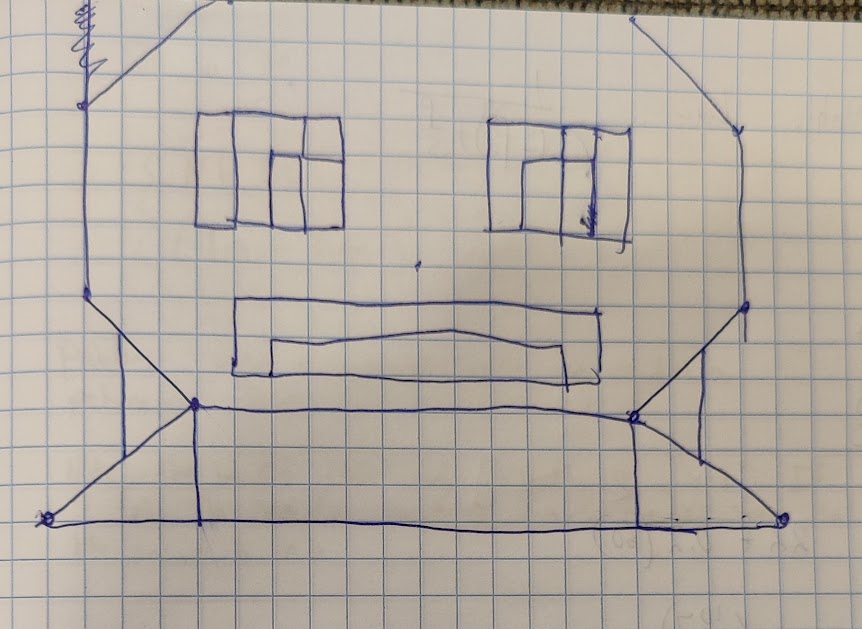
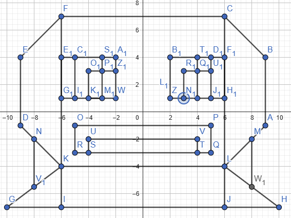

Select Your Shape
Select Your Color
Customize Shape
For my paper drawing, I tried to draw Squirtle from Pokemon. This was the base drawing
From there I plotted the points in GeoGebra to make it easier to figure out how to turn it into quads and triangles
Below is the version made in WebGl
Go ahead, capture it!
Beyond the Basics: "Something Awesome"
For the "something awesome", I made various miscellaneous changes as well as added the two new shapes (being star and Squirtle). The miscellaneous changes are mainly the changes to the UI. The better looking buttons and layout, the ability to use text input, the ability to preview the color you've selected, stuff like that. Those aren't necessarily related to graphics programming but I found they made for a cooler experience using the paint program. The star was a good exercise in combining triangles and I felt it fit right in with the other stamp shapes. The ability to draw Squirtles was definitely more of a challenge since it was the only object I've drawn that needed to be drawable on two different canvases. I eventually got it to work, although my solution might be just a teensy bit hack-y. The "capturing" thing was a simple addition but I thought it added a bit of fun to it given that it's a Pokemon.